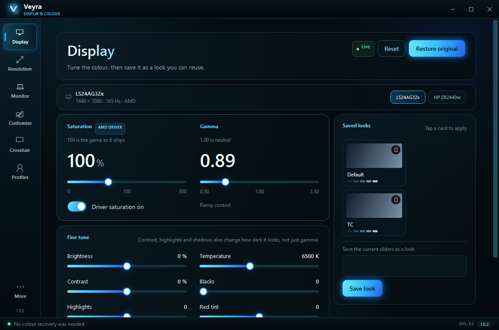

GPU driver saturation
Real per-display Digital Vibrance on supported AMD and NVIDIA drivers. The slider maximum comes from the driver, never a made-up range.
v1.0.2 · Windows 10 x64
Per-display GPU saturation, live colour controls, guarded display modes and a crosshair that stays out of the way. Every change is reversible, and nothing touches the game.

Colour, without guesswork
Veyra reads capabilities from the driver, applies only what the display accepts, and keeps the original state so you can always get back.
Real per-display Digital Vibrance on supported AMD and NVIDIA drivers. The slider maximum comes from the driver, never a made-up range.
Resolution and refresh changes ask for confirmation. A separate watch process rolls them back if Veyra stops responding.
Brightness, contrast, gamma, temperature, blacks, highlights and red tint update live on the selected display.
Brightness, contrast and low blue light through the monitor's own DDC/CI channel, with one-click restore. Unsupported controls stay disabled.
A normal layered window drawn by Windows. Shape, size, gap, colour and opacity, with no hooks and no anti-cheat interaction.
Your own saved looks and named game profiles. Apply the right look without rebuilding it every time.
The whole app
A compact sidebar, focused pages and controls that read at a glance. Hover any screenshot to open it full size.
A calibration tool, not a game booster
Veyra changes how a display looks, not how a game performs. It does not inject, hook or interact with anti-cheat systems.
Get Veyra 1.0.2
Both builds are self-contained Windows x64. No .NET runtime installation, no account and no telemetry.
Extract the folder and run Veyra.exe. Nothing to install, nothing left in the registry.
Veyra-Portable-1.0.2-x64.zip
A per-user install with Start-menu and desktop shortcuts. No elevation prompt, and uninstalling removes the program files.
%LOCALAPPDATA%\VeyraVeyra-Setup-1.0.2-x64.msi
The builds are unsigned, so Windows SmartScreen may warn on first launch. Verify either file with the SHA-256 checksums. Requires Windows 10 22H2 or later, x64.
Verified
Developed and tested on an AMD Radeon RX 7800 XT, Ryzen 7 5700X and Windows 10 22H2. The full compatibility notes stay in the repository.
AMD and NVIDIA driver saturation. Intel and unsupported GPUs use the Windows ramp controls.
Every control targets the selected display. Hybrid laptops and multi-GPU systems are not verified yet.